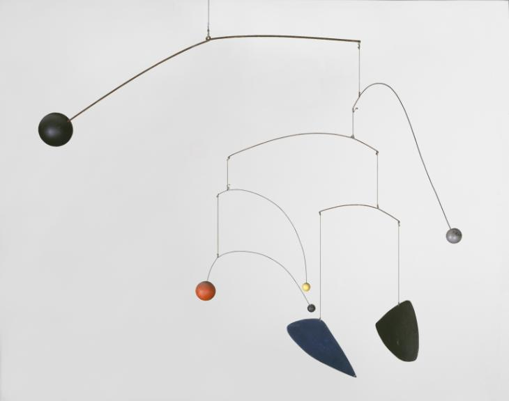
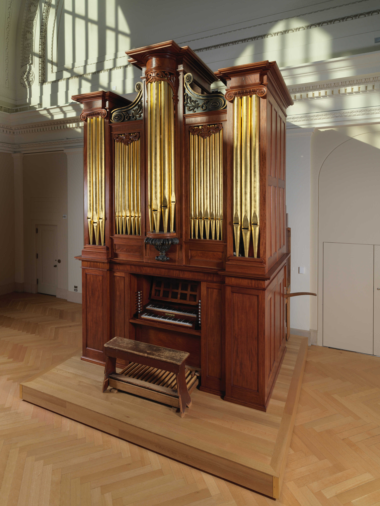
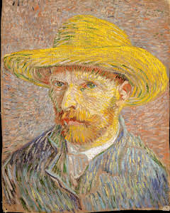
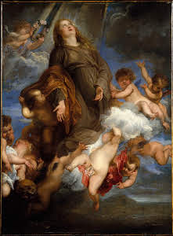
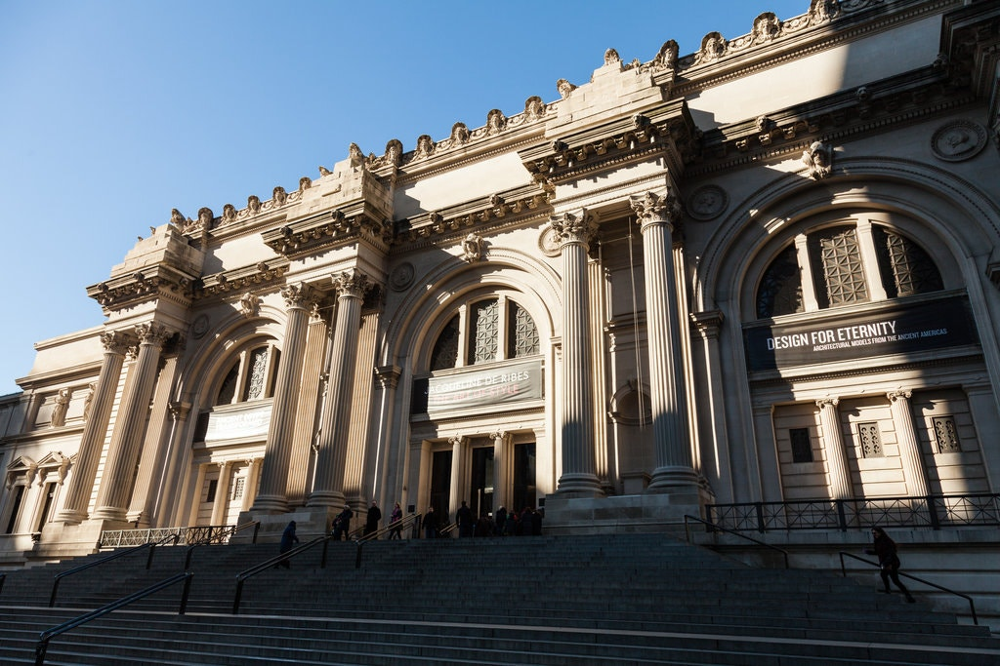
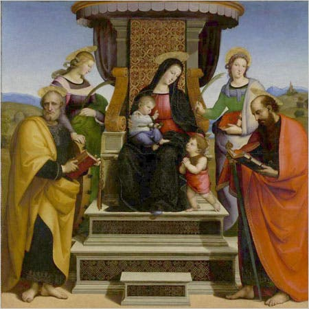
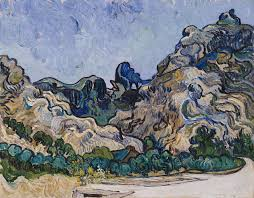
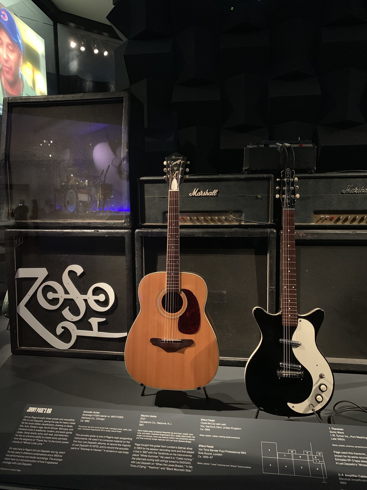

THE METROPOLITAN MUSEUM OF ART
Rishita Chatterjee,
Srinjoy Das
August 1, 2020 |
Creativity
The roots of the Metropolitan Museum of Art go back to 19th century Paris when a group of rather adventurous Americans agreed upon creating a “national institution and gallery of art” to instill appreciation towards modern-day art and culture in their countrymen. So on the bright summer day of 13th April 1870, The Metropolitan Museum found its abode on Dodworth Building at 681 Fifth Avenue, New York, with a Roman Sarcophagus being its first acquired object. Since then, for about 150 years, the “MET Museum” has celebrated everything from Blair Waldorf to The Beatles and from Madonna to Monet. The MET has not only become one of the greatest institutions to grow cultural appreciation but most importantly the museum has celebrated artists and their stories from all over the world. It holds over 1.5 million objects spread over 2 million square feet and administered and restored by about 2,000 staff members. With around 7 million people visiting every year and 30 million exploring its offerings online.

An institution over a century old, The Metropolitan Museum of Art has undoubtedly aged like fine wine, It has seen art unfold all the way from Van Dyck’s painting of Saint Rosalia made while he was quarantined during the “black death” plague to the present day COVID-19 crisis.

However, the reason MET has always stood out is that it has always sheltered the finest collection of art for years to come. With paintings like “Bridge over pond water of lilies” by Claude Monet, the one piece that revolutionized the post-impressionist style of painting in the 19th century and Raphael’s “Madonna and Child Enthroned with Saints” known for its elaborate colors and detail which hence gained emblematic significance during Italian Renaissance. Although, when we speak of the post-impressionist style of art and Renaissance, Vincent Van Gogh is a name that crops up, instantly. Paintings like, “Starry Starry Night” and “landscapes of Saint Remy” which were indisputably priceless contributions in art and culture. However, it was Van Gogh’s self-portraits that influenced so many revolutionary forthcoming artists, paintings like “Self-portraits with a straw hat” which marked a significant change in the style of his painting with the use of a darker pallet inspired, artists like Alberto Valentini in his painting “Homage to Vincent” and Italian artist André Vianu for “Portrait of a man”. Moving on to modern-day artist’s works like “Mobile” by Alexander Calder and “Autumn Rhythm: Number 30” by Jackson Pollock became popular in the late 1900s. These paintings used a style called abstract expressionism, which further became one of the most eminent forms of paintings and influenced so many more to come.
The MET doesn’t fall short in its collection of countless antique musical instruments either. The two libraries: The Art of Music through Time and Mapping the Art of Music provide us with an in-depth view of musical instruments created all over different periods of time and their commonalities and inspirations. The opening of the newly renovated Mapping the Art of Music gallery provides visitors with innovative displays on these beautifully crafted instruments in new and exciting ways. From the oldest extant piano by Bartolomeo Cristofori (Florence 1720) to the American pipe organ by Thomas Appleton (Boston 1830), the museum pays homage to countless influential musicians and inventors across the past few centuries who have greatly contributed to the way we perceive music in the world today. The Art of Music Through Time gallery showcases illustrations of music and instruments created by individuals all over the world across time, chronologically. Instead of just being heard the instruments serve as powerful channels of visual expression. “Play it Loud”, an initiative co-curated by Jayson Ker Dobney and Craig Inciardi gives us a view into the early days of rock. From Hendrix to Eddi Van Halen, this section of the museum showcases several instruments and memorials of the “Guitar Gods.” One noticeable example of these would be The Harmony Sovereign Acoustic Guitar that Jimmy Paige used for parts of Stairway to Heaven.

Speaking of the MET museum, we simply cannot miss out on the iconic MET GALA. An event that was primarily started as a fundraiser became one of the most exclusive nights in the fashion industry. From Princess Diana’s 1996 appearance wearing a Dior to Ezra Miller’s 2019 “The celebration of Camp is almost a funeral” look as he strutted down the red carpet. The MET GALA has given designers all over the world a platform to showcase their ensembles. And as the event gained more popularity over the years, renowned designers like Christian Louboutin, Coco Chanel, Donatella Versace, Karl Lagerfeld, and so on presented some of their finest collection on the red carpet. In these 72 years, themes changed as the fashion industry gained fresher perspectives, starting from Christian Dior’s legendary “Maison de la couture” launched during 1947. This collection had romanticism labeled all over it. With an insane amount of rational fabric used and silhouettes being introduced every six months, made Christian Dior one of the dominant voices in the fashion industry for over two decades. As times changed the various waves of feminism started gaining popularity and women were inspired to have “actual careers”, this heavily changed the workings of the fashion industries thereafter, Coco Chanel introduced the “modernization” collection, which was formal office wears for women, surprisingly inspired by military uniforms and broke the typical haute couture dress styles and preferences. Both of these collections irrespective of being of pioneered years apart were first brought into the spotlight during the Met gala.

Since 1905, The MET has influenced artists of all kinds, from upcoming designers to established painters. They opened study rooms, to make collections that contained not only masterworks but also more ephemeral and utilitarian objects accessible to students, enthusiasts, and connoisseurs all over the world with the intention to inspire and create. The fourth most visited museum in America, MET with its fine collection continues to be one of the most influential and comprehensive museums of all time, celebrating art, artists, and most importantly their stories.





